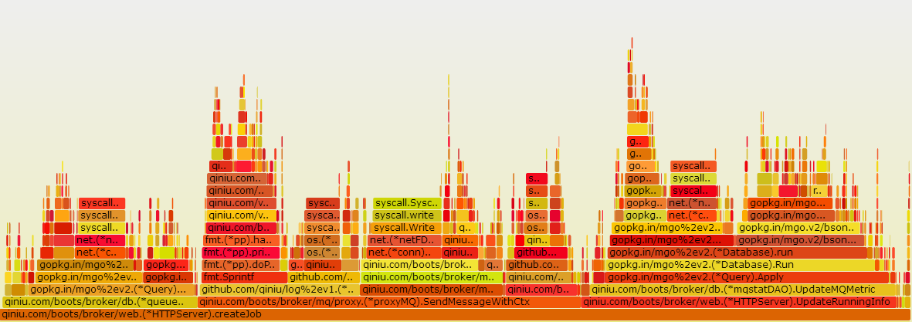
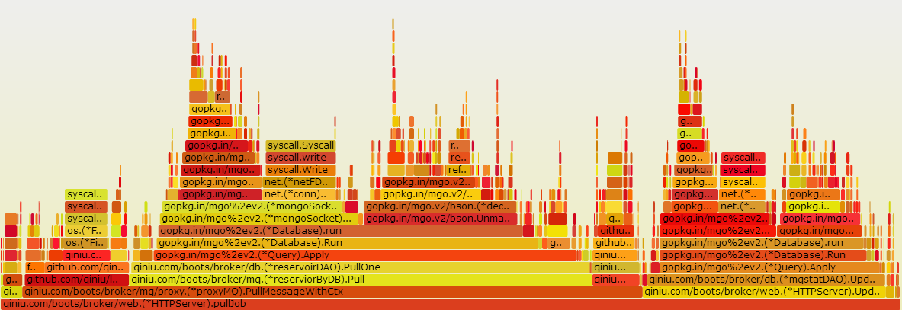
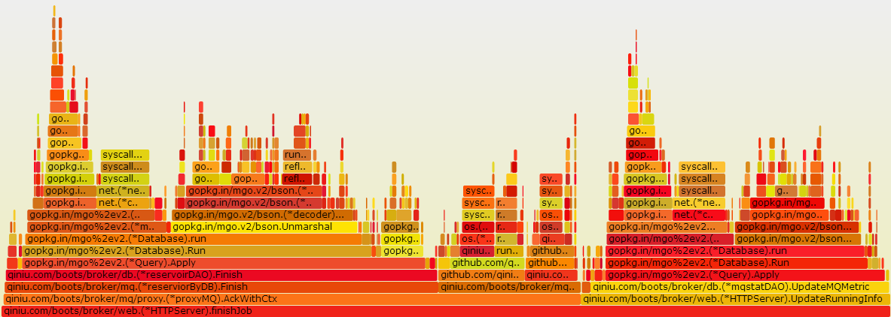

缘起
最近，做一个项目：封装一个MQ，提供发送、拉取、查询的基本功能，需要保证一条消息只被消费一次。写完了基本功能以后，开始做benchmark。结果超级糟糕：
| 发送线程数量 | 消费线程数量 | 发送TPS | 消费TPS |
|---|---|---|---|
| 3 | 3 | 200-400 | 20-60 |
而且，随着消费线程的数量增加发送&消费的TPS都下降。
排查
接口
一次发送涉及的数据库操作：
- 一次topic查询
- 一次跟MQ之间的RPC
- 一次写统计数据
一次消费涉及的数据库操作：
- 两次cas操作
- 两次写统计操作
系统状态
磁盘IO
通过命令 iotop 发现：mongodb写磁盘速度最大2M/s。
网络
通过命令 nethogs 发现：mongodb的通信速度最大200+KB/s。
系统总体情况
通过命令vmstat发现：
- 系统和用户的CPU使用率都超低，两者加起来不到5%，系统的中断和上下文切换非常高，特别是上下文切换，达到了十几万/s
- 从缓存写到磁盘的io比较高好几百/s
- 内存使用率非常低
结论
问题一定是使用mongodb上面。
排查
profile程序
通过golang自带的profile功能，在程序里面添加profile代码，通过go tool pprof对程序做profile，用 go-torch生成火焰图。发现果不其然，一个请求过程中，数据操作耗时占整体的40%以上。
发送消息火焰图

拉取消息火焰图

确认消息火焰图

通过看程序以及对需求的分析，程序可以做优化：
- 统计数据可以不用每次都去写数据库，把它放在内存或者写本地磁盘，定期刷到数据库
- 去重以后的消息，可以放在内存，减少拉取消息时候一次cas操作
mongodb
通过命令 mongostat 查看mongodb的运行状态，发现随着消费线程并发的提高锁的百分比越来越高最后超过的90%。查看mongodb的版本是2.4.9，它用的数据库锁。换个mongodb版本，避免锁的开销，通过了解公司线上使用的版本3.0.15，并使用wireTiger存储引擎。果断按照这个环境进行benchmark，结果仍然不尽任意。查看profiler，一个类似mysql的慢查询的命令。通过以下命令加上专家的讲解，从信息 nscannedObjects : 71040，发现扫描对象比较多，从代码确认是缺少了一个索引。
> db.setProfilingLevel(2);
{"was" : 0 , "slowms" : 100, "ok" : 1} // "was" 表示旧的设置
> db.system.profile.find().sort({millis:-1}) // 列出耗时的操作，按照操作耗时排序，这条语句会列出扫描的对象数量，锁等关键信息
在程序里面加上索引，再次benchmark达到预期。
总结
本次调优最大问题是思维盲区，由于自己对mongodb不熟悉，就没有想到去profile mongodb，把精力放在了优化代码层面的数据库操作，中间还做过把消息放在缓存中虽然达到预期，但是有数据不一致的问题。其实，方法没对，优化的首要原则是做profile，profile一切。